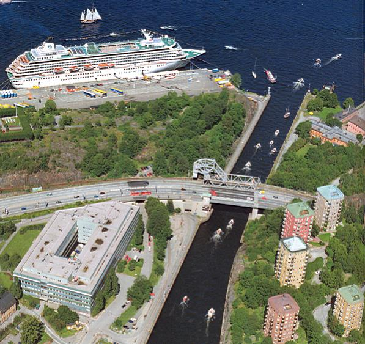

|
 Stora utloppet. Stockholm fick sin nya förbindelse mellan Saltsjön och Mälaren i slutet på 1920-talet då Hammarbyleden grävdes. Denna varma sommardag är det en intensiv trafik ut till havs, endast en sightseeingbåt är på väg in. Vid masthamnen nedanför Fåfängan ligger Crystal Symphony och väntar på att gästerna ska återvända med välfyllda intryck (och kassar) efter några timmars besök i Stockholm. När den äldre Danviksbron (järnvägsbron) invigdes 1922, utnämnde pressen den till "stockholmstraktens fulaste bro". Den nya bron (vägbron) invigdes mera i tysthet i mitten på 1950-talet. Tillhöger syns Danviksklippans vackra punkthus och i kanalmynningen ligger Danvikens gamla hospitalsbyggnad i stadens då absoluta utkant. (Flygfoto Stockholm, Nils-Åke Siversson, Roland Svensson, 2002) |